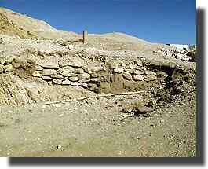
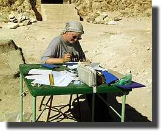
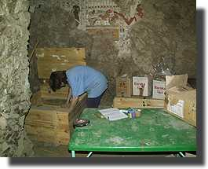
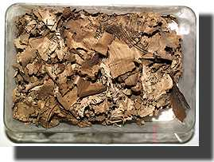
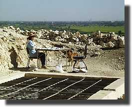

|
|
Tuesday 14 DecemberHelen Strudwick arrived late on Monday, and sleeps in to get over the late arrival. She and I are going to begin packing the coffins and then go through all the other material. This morning I begin looking through the drafts of the manuscript of the tomb for things which I need to check on site. I particularly look at some aspects of the delimitation of the courtyard for measurements I have to take. The adjacent photo shows the remains of a construction in the north-east corner of the court. The day before, we had completed the first complete pass through the 18th dynasty ceramics, and now it is time to start drawing them. This is Gillian's job, and she sits out in the court all day working. Pottery is always published in drawings, as only that way can the full shape and size of the vessel be properly understood. We shall of course take some photos, but these will mainly be for record only. |
|
Wednesday 15 DecemberAnother day of drawing pots for Gillian. This is a job which requires a good deal of experience and a certain 'knack'. Ironically, complete pots are more difficult to draw than those in pieces, mainly because you can get inside a broken pot and extract the inner profile etc more easily.
Helen and I begin the sort/repack of the finds. We begin with reorganising the coffin fragments so that they will not be in the way while we do the other work. We then get out all the other objects with the aim of making sure that we have put all the similar things together and pull out those on which we wish to work. Bridget continues to conserve and mount papyri. In the evening, Julie Dawson arrives to continue with the conservation work she has been doing. |
|
Thursday 16 DecemberJulie is the antiquities conservator in the Fitzwilliam Museum in Cambridge, and has been working in TT99 since 1993. She started out working on consolidating and cleaning the walls, and has also done a lot of work on the objects. Her main job this year is to conserve and mount the fragile linen fragments of the funeral shroud of Senneferi discovered last year. More on this another day... Here is a photo of a box of the papyrus fragments which Bridget is having to deal with. They are mostly small, although when they are humidified and straightened out it does appear that there are a number which are bigger than perhaps we thought. The papyrus is very light, and thinner than many of the well-known papyri in the BM. Presumably fineness of material is something of an indicator of quality? There is no certain evidence for there being certainly more than one papyrus, but a number of fragments are lighter in colour and seem to be in a slightly different hand. A name has yet to be found on these fragments, which might of course solve the problem.
Outside in the court, Gillian is drawing pots, and Helen and I begin to work on the objects. Helen continues a process started in 1996 of putting together a number of faience vessels, probably of the Third Intermediate Period. I work on some alabaster jars from the Senneferi burial; it appears he had two, probably oil jars, one of which at least bore his name (see last year, page on canopics). I hope to add a proper picture of this later. During the day Helen received an unusual visitor as the picture shows. |
|
|
All text and images © Nigel Strudwick 1999
|
 The Dig Diary 1999--Part 5
The Dig Diary 1999--Part 5© Nigel Strudwick 1997-2016